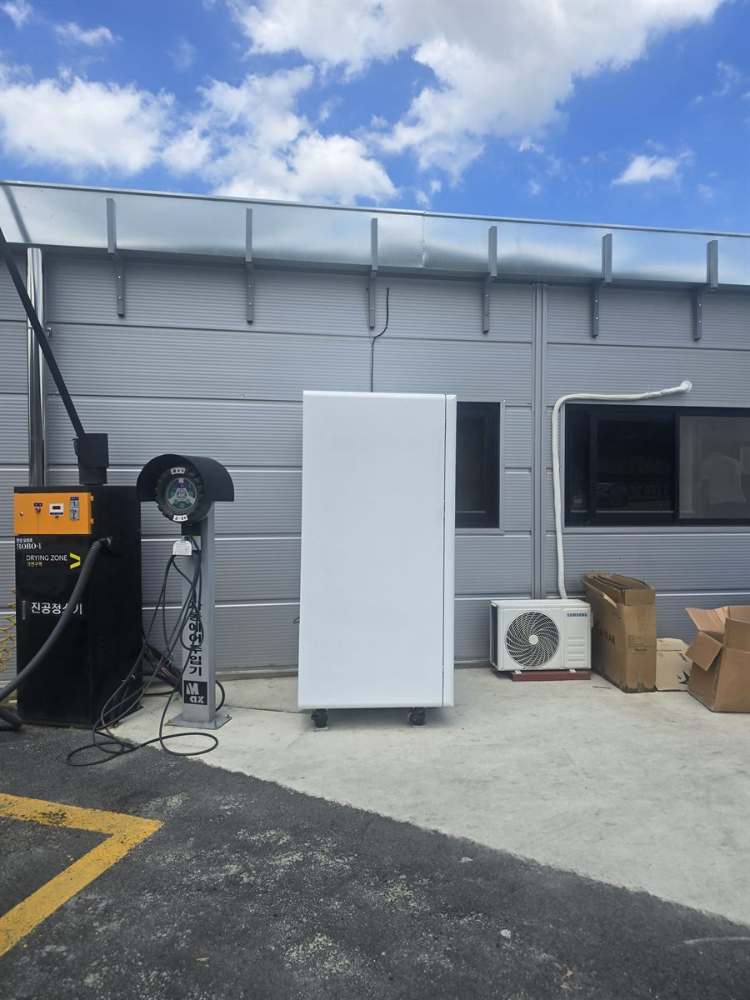

구로구 무인자판기 설치
무인세차장 마무리 구역 음료·스낵 자판기

세차장에서 음료가 팔리는 순간은 생각보다 늦게 옵니다. 거품을 뿌리고 헹구는 동안에는 손이 비지 않습니다. 손님이 지갑을 여는 때는 차를 다 씻고 실내를 정리하는 끝자락입니다. 그래서 이번 구로구 현장에서는 세차 베이가 아니라 진공청소기와 에어주입기가 모여 있는 마무리 구역을 먼저 봤습니다.
사장님이 처음 지목하신 자리는 입구 쪽이었습니다. 눈에는 잘 띄지만 차가 들어오고 나가는 길목이라 후진하는 차와 부딪힐 위험이 있었습니다. 대신 마무리 구역 끝, 관리동 벽이 등을 받쳐 주고 처마가 비를 가려 주는 지점을 권해 드렸습니다. 손님이 진공청소기 호스를 정리하면서 자연스럽게 마주 보게 되는 위치입니다.
구로구 무인세차장에 넣은 구성
세차를 마친 손님은 대부분 목이 마르고 손이 지저분합니다. 그래서 500mL 이상 생수와 이온음료를 가장 눈에 띄는 칸에 깔았습니다. 캔커피와 탄산은 그 아래 칸으로 내렸고, 여름을 대비해 냉장 온도는 조금 더 낮게 잡아 두었습니다. 간식은 한 손으로 뜯어 바로 먹을 수 있는 소포장만 남겼습니다. 봉지가 크거나 부스러기가 많이 나오는 품목은 차 안에서 먹기 불편하다는 이유로 빼기로 했습니다.
결제는 카드와 간편결제만 열어 두었습니다. 무인세차장은 이미 손님이 기계에 카드를 대고 쓰는 곳이라 따로 설명이 필요 없습니다. 실외에 현금함을 두면 습기와 잔돈 때문에 사람이 나와야 할 일이 늘어나므로 넣지 않았습니다. 남은 재고와 내부 온도는 휴대폰에서 바로 보이고, 채울 시점이 오면 알림으로 먼저 알려 줍니다.
- 음료 — 대용량 생수·이온음료를 위 칸, 캔커피와 탄산은 아래 칸
- 간식 — 한 손으로 먹는 소포장 위주. 부스러기 많은 품목 제외
- 결제 — 카드·삼성페이·카카오페이·QR (실외라 현금함 미사용)
- 관리 — 재고·온도 원격 확인, 보충 시점 알림
장점과 감안하셔야 할 점
먼저 장점입니다. 무인세차장은 사람 없이 24시간 돌아가는 구조라 자판기와 성격이 잘 맞습니다. 손님이 음료 한 병을 사러 밖으로 나가면 그 걸음이 곧 이탈인데, 자판기가 그 걸음을 없애 줍니다. 사장님 입장에서는 인건비를 늘리지 않고 판매 품목 하나가 더 생기는 셈이고, 야간에도 판매가 멈추지 않습니다.
감안하셔야 할 점도 있습니다. 첫째, 실외는 계절을 그대로 맞습니다. 한여름에는 냉각기가 쉬지 않고 돌아 전기 사용이 늘고, 한겨울에는 생수가 얼지 않도록 설정을 조정해야 합니다. 둘째, 물과 세제가 날아오는 환경이라 자리를 잘못 잡으면 표면과 조작부가 빨리 상합니다. 셋째, 전원 경로는 한 번 정하면 바꾸기 번거롭습니다. 실외 배선은 방수 처리를 같이 하기 때문에 나중에 몇 미터 옮기는 일도 다시 공사가 됩니다. 넷째, 비가 이어지면 세차장 방문 자체가 줄어 판매도 같이 내려갑니다.
구로구, 이런 자리가 잘 됩니다
구로구는 산업단지와 주거지가 붙어 있는 구조라 차량 이동이 하루 종일 끊기지 않습니다. 구로동은 서울디지털산업단지가 걸쳐 있어 출퇴근 차량과 업무용 차량이 많고, 신도림동은 지하철 환승과 대형 상업시설이 겹쳐 주변 도로 통행량이 큽니다. 고척동은 고척스카이돔 일대로 행사가 있는 날 차량이 몰립니다. 개봉동과 오류동은 아파트 단지가 넓게 깔려 주말 오전 세차 수요가 고르게 나오고, 온수동과 천왕동은 공업지역과 물류 동선이 이어져 화물차·승합차가 섞입니다. 항동은 푸른수목원 방면으로 나들이 차량이 지나갑니다.
세차장 안에서 저희가 권하는 자리는 손을 놓고 잠깐 숨 돌리는 지점입니다. 진공청소기 앞, 매트 털이기 옆, 관리동 출입구처럼 손님이 멈춰 서는 곳이 좋습니다. 반대로 고압수가 직접 닿는 베이 안쪽과 차가 회전하는 통로는 피합니다.
구로구 서비스 지역
구로동 · 신도림동 · 개봉동 · 고척동 · 오류동 · 가리봉동 · 궁동 · 온수동 · 천왕동 · 항동
구로구 전역에서 방문 상담이 가능합니다. 인접한 금천구·영등포구·양천구와 경기 광명시도 같은 담당자가 함께 다닙니다. 지역별 안내는 구로구 무인자판기 설치 안내 페이지에서 보실 수 있습니다.
구로구 무인자판기, 이렇게 시작하시면 됩니다
전화나 상담 신청으로 주소만 남겨 주시면 됩니다. 담당자가 나가서 차량 동선, 처마가 덮는 범위, 콘센트까지의 거리, 바닥 경사와 배수 방향을 확인합니다. 그 자리에 맞는 기종과 품목을 정하고 설치일을 잡으면 끝이며, 설치비는 받지 않습니다. 기계는 구입·렌탈·임대 중에서 고르실 수 있어 초기 비용 없이 시작하셔도 됩니다.
비를 피할 처마가 없거나 전원을 안전하게 끌어올 방법이 마땅치 않으면 그 자리에서 솔직히 말씀드립니다. 실외는 무리해서 넣으면 문제가 첫 계절에 바로 드러납니다. 조건을 갖춘 다음에 넣는 편이 결국 덜 번거롭습니다.
※ 사진은 픽프리가 시공한 설치 사례이며, 글에 적힌 지역의 현장 사진은 아닙니다.
함께 많이 찾는 키워드
구로구 무인자판기 · 구로구 자판기 설치 · 구로구 자판기 임대 · 구로구 자판기 렌탈 · 서울 무인자판기 · 서울 자판기 설치 · 구로동 자판기 · 신도림동 자판기 · 개봉동 자판기 · 고척동 자판기 · 오류동 자판기 · 가리봉동 자판기 · 궁동 자판기 · 온수동 자판기 · 천왕동 자판기 · 항동 자판기 · 무인세차장 자판기 · 세차장 자판기 · 실외 자판기 · 야외 자판기 설치 · 24시간 자판기 · 음료 자판기 · 생수 자판기 · 스낵 자판기 · 무인키오스크 설치 · 스마트 자판기 · 카드 자판기 · 자판기 설치비용 · 자판기 창업